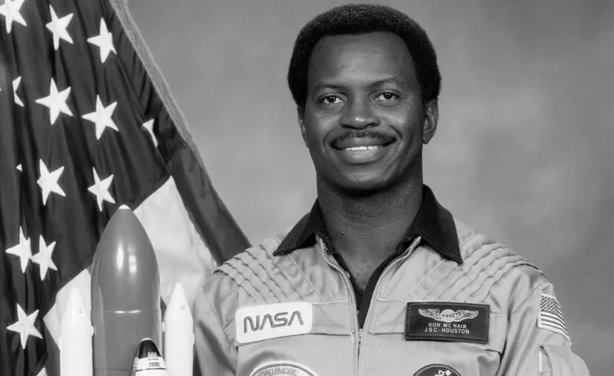

Ronald McNair

"Before you can make a dream come true, you must first have one."
Ronald McNair
1950
Early Life
Born in 1950 in South Carolina to Carl and Pearl McNair, Ronald was raised in a climate of racial segregation. Growing up, McNair was a very studious child who could read and write before entering school. His love of space began after the Soviet launch of Sputnik, the first space satellite and boosted by watching Star Trek.
McNair's determination began when he was a small child. At nine years old, he attempted to check out books from a segregated library and refused to leave, even when the librarian threatened to call the police. The librarian called the police and McNair's mother. McNair sat on the counter and waited for them to arrive. When they eventually arrived, the police officer asked the librarian asked why she can't just give the kid the books. Eventually, the librarian handed them over and McNair thanked her. The building that housed the library is now named after him.
1967
Studies
McNair was an outstanding student and shone in baseball, basketball and football. He also loved playing the saxophone for his school band. He graduated as valedictorian of the class of 1967 and was awarded a scholarship to North Carolina Agricultural and Technical State University (NC A&T) where he achieved a B.S. in physics.
McNair continued his education at the Massachusetts Institute of Technology (MIT), where he studied for a PhD. He faced a major challenge during his studies when two years of research on laser physics for his doctorate was stolen. Nonetheless, McNair produced a second set of data and earned his PhD in 1976. He then went on to study in France with a focus on laser physics. His novel research findings were published in several scientific papers. At this point, NcNair was a recognised expert in the field of chemical and high-pressure lasers.
1976
Family & Career
In the same year McNair graduated, he married his wife, New York, native Cheryl Moore. They then relocated to in Malibu, California so McNair could pursue a career as a physicist at Hughes Research Laboratories in Malibu, California. During McNair’s time as a staff physicist he worked on the development of lasers for isotope separation and conducted research on electro-optic modulation for satellite space communications
McNair and his wife went on to have children, son Reginald, born in 1982, and daughter Joy, born in 1984.
1978
Time With NASA
McNair was one of 10,000 applicants who applied to NASA's astronaut program. In January 1978, NASA selected him and handful of 35 others to join the program. Disaster nearly struck when he was seriously injured in a car accident but McNair's determination saw him persevere. By the following august, he had completed his training and evaluation.
Guion S. Blueford was the first African American in Space and about five months later, Ronald McNair followed as the second. McNair worked as a mission specialist on the Challenger as part of a successful mission, which orbited the earth 122 times and launched $75 million communications satellites.
1986
Death
Nearly two years after his first mission, in January 1986, McNair set out to join a crew of seven as one of three mission specialists on board the Challenger. As the public tuned in to watch the flight climb to space, the challenger shuttle exploded and began to disintegrate only 73 seconds into its flight, killing all crew members on board.
McNair left behind his wife and two children. McNair was originally buried at Rest Lawn Memorial Park. In 2004, his remains were moved to Ronald E. McNair Memorial Park which was also in Lake City, South California.
5 Fun Facts
- Ronald McNair was an accomplished jazz saxophonist and was the first astronaut to play a musical instrument in space. For his doomed second mission, McNair had plans to play a saxophone solo piece for composer Jean Michel Jarre's album, Rendez-Vous. Jarre paid tribute to McNair by entitling the album's last piece, Last Rendez-Vous (Ron's Piece) - 'Challenger'.
- Ronald McNair was a Karate expert. He won the 1976 AAU Karate gold medal and went on to win five regional championships, later becoming a fifth-degree black belt Karate Instructor.
- On January 29, 2011, the library in Lake City, South Carolina was dedicated to the Ronald McNair Life History Center.
- McNair logged 191 total hours in space with his first mission aboard the Challenger. He and his crew achieved many firsts, including the first untethered spacewalk.
- With his McNair 1984 space mission, McNair became the second African American to fly in space, after Dr. Guy Blueford who flew a year earlier.